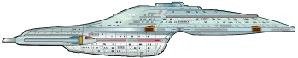

Flotta Stellare - Classe Intrepid |
Varata
nel 2370, la classe Intrepid è
una delle più avanzate di tutta la Flotta Stellare. I vascelli di questa classe,
utilizzati prevalentemente come navi multimissione, sono caratterizzati dalle
dimensioni non troppo elevate, in modo da potere, all'occorrenza, atterrare
direttamente sulla superficie di un pianeta.
Dati di una nave tipica di questa classe:
Classificazione: Incrociatore leggero.
Dimensioni: 15 ponti (Caretaker),
700.000 tonnellate di massa (Phage), 344
metri di lunghezza, 175 metri di larghezza, 45 metri di altezza.
Propulsione: Reattore materia/antimateria con una velocità massima di
warp 9,975 (Caretaker), motori warp di
classe nove a ingresso triciclico, usato per la prima volta su una nave stellare
(Relativity); i motori sono ad assetto
variabile per eliminare gli effetti dannosi al
subspazio.
Sistema informatico: Tecnologia mista a
gel pack bioneurale e isolineare, trasferimenti dati via network ottico; i
circuiti bioneurali possono organizzare ed elaborare una complessa serie di dati
in maniera più efficiente dei sistemi isolineari ottici.
Questa classe di astronavi è in grado di atterrare sulla superficie di un
pianeta e ripartire.
| USS Bellerophon NCC- 74706 Nave su cui hanno viaggiato Bashir e Ross per raggiungere la conferenza dei Romulani. | Inter Arma Enim Silent Leges | Nella mitologia greca, Bellerofonte era l'eroe che uccise la Chimera
(che ha dato il nome ad una classe di astronavi)
a cavallo di Pegaso (USS Pegasus).
Vale la pena di ricordare che Chimera e Bellerofonte sono i nomi del virus e
dell'antivirus su cui si basa la storia di Mission: Impossible II, la
cui prima stesura è di Ronald D. Moore e
Brannon Braga. Si chiamava Bellerophon la nave che condusse Napoleone a S. Elena ed aveva questo nome anche la nave del Professor Moebius in Forbidden Planet. |
| USS Intrepid Assegnata al pattugliamento della Zona Neutrale Romulana all'inizio del 2375. | Force of Nature, In the Flesh | In un okudagram di Nemesis si legge che una Intrepid NCC-74600 fa parte dello Starfleet Battle Group Omega, ma non ci sono altri riferimenti che fanno presumere che si trattino della medesima nave. |
| USS Voyager NCC-74656 Varata nel 2371 e dispersa nelle Badlands in data stellare 48315 al comando del capitano Kathryn Janeway. | Voyager | Le sonde Voyager 1 e Voyager 2, lanciate dalla NASA negli anni '70, hanno esplorato i pianeti esterni del sistema solare e sono poi andate alla deriva nello spazio. |